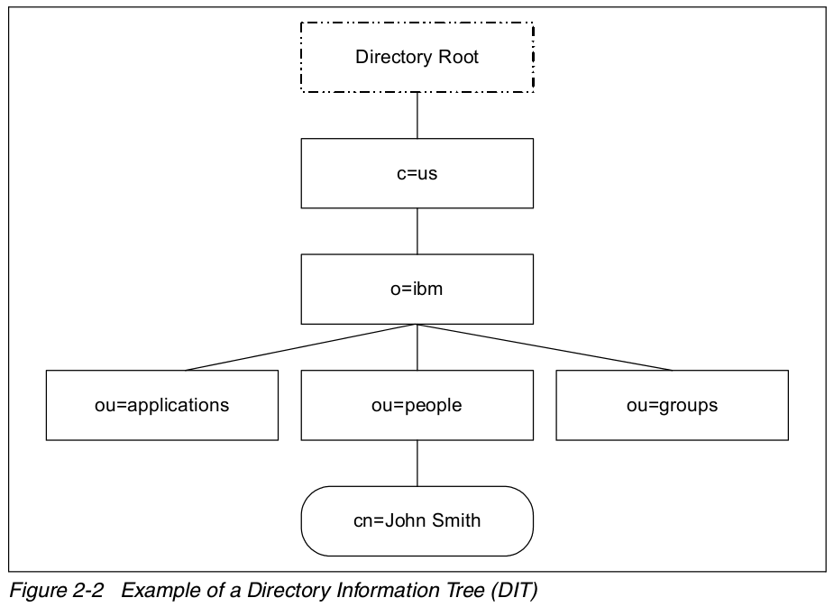

LDAP¶
LDAP 定义¶
本文不打算重复 LDAP 的标准定义，仅谈一下自己的理解。
LDAP 译为轻量级目录访问协议，一般网上经常拿其与关系型数据库做类比并比较他们的不同。
事实上，LDAP 既不是数据库也不是存储数据的方法，而是用来访问数据的方法。LDAP 可以访问的 是存储在目录信息树（Directory Information Tree (DIT)）中的数据。
目录信息树存储数据的方法与关系型数据库非常的不同。关系型数据库的数据是存储在某一数据库 的某一数据表中的某以记录内的，因此数据库中定位一条记录数据需要三个要素：数据库、 数据表、记录号；目录信息树存储数据的方式是树状结构，定位一条数据的方法是从树根到叶子节点 的唯一路径，数据就存储在叶子节点中。
由此可见，LDAP 与关系型数据库类比其实是两种数据存储与访问方式的类比。
LDAP 是访问目录信息树中数据的协议¶
事实上，LDAP 仅定义了访问协议，数据的真实存储方式并不在 LDAP 的考量范围内，即只要提供了 目录访问接口的数据都可以通过 LDAP 协议来访问，如果关系型数据库实现了该接口也是可以通过 LDAP 协议来反问的。从这个角度来讲，确实不应该将 LDAP 与关系型数据库做类比。
LDAP 特性¶
且 LDAP 对数据的读取和查询做了优化，并不适用于经常变动的数据。
LDAP 不定义客户端和服务端的工作方式，但会定义客户端和服务端的通信方式， 另外，LDAP 还会定义 LDAP 数据库的访问权限及服务端数据的格式和属性。
LDAP 有三种基本的通信机制：没有处理的匿名访问；基本的用户名、密码形式的认证；使用 SASL、SSL 的安全认证方式。LDAP 和很多其他协议一样，基于 tcp/ip 协议通信，注重服务的可用性、信息的保密性等等。部署了 LDAP 的应用不会直接访问目录中的内容，一般通过函数调用或者 API，应用可以通过定义的 C、Java 的 API 进行访问，Java 应用的访问方式为 JNDI(Java Naming and Directory Interface)。
LDAP 结构¶
目录信息树¶
目录信息树以目录条目（entry）来存储和组织数据，每一个目录条目通常描述一个对象（例如：一个人）， 目录条目有一个唯一名（DN，distinguished name）进行标识。DN 由一系列的相对唯一名（RDN，relative distinguished name）来标识。每一个目录条目由一或多个属性来描述该条目，例如描述人的条目有一个 电话号码的属性。
引用一张 Understanding LDAP Design and Implementation 的图示，
目录条目根据他们在目录信息树中的位置命名，上图底部的目录条目的 DN 唯一名是：:
cn=John Smith,ou=people,o=ibm,c=us. The organizational group people has the DN of ou=people,o=ibm,c=us.
LDAP 的查询等操作语句在这里就不介绍了，有需求的可以在参考资料中找。
LDAP 安全¶
LDAP 安全相关的资料请参考 LDAP 注入与防御剖析
LDAP 服务器配置¶
请参考 OpenLDAP 管理员指南